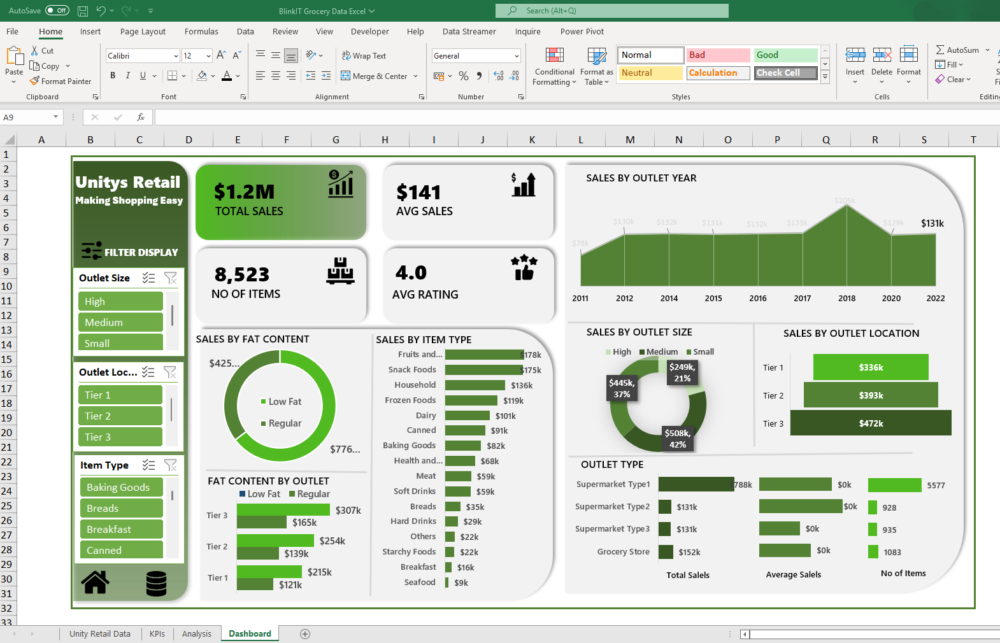

Tool Used: Microsoft Excel
This dashboard is designed to provide a high-level overview of retail sales
performance based on outlet characteristics, product types, and customer preferences.
This dashboard effectively visualizes retail sales performance by combining financial KPIs, outlet
characteristics, and product trends. It supports:
i. Business decision-making around product stocking and outlet management
ii. Performance comparison across outlet sizes, tiers, and categories
iii. Consumer trend analysis (e.g., fat content preference, popular item types)
It’s an ideal tool for retail analysts, category managers, or store planners seeking clear, actionable
insights from large grocery datasets.

Tool used: Microsoft Excel
This dashboard provides a comprehensive analysis of e-commerce sales performance by occasion, product category, time, and
geography. The layout emphasizes insightful KPIs, dynamic filters, and clear visualizations for
effective decision-making.
It offers a well-rounded snapshot of seasonal demand, product/category trends, time-of-day performance, and
geographic revenue distribution. It is ideal for:
i. E-commerce managers tracking performance
ii. Marketing teams planning seasonal campaigns
iii. Logistics teams optimizing delivery schedules
This Excel-based dashboard based on dataset of coca cola products in the US market provides a performance overview
of Coca-Cola products across different brands and retailers. It combines sales, profit, and unit data for
strategic business insights.
i. Sales Team can identify high-performing channels and opportunities for
upselling or expanding distribution.
ii. Marketing Department can tailor campaigns to promote underperforming brands.
iii. Strategy and Executives makes informed strategic decisions around pricing,
budget allocation, and ROI optimization.
iv. Product Management can guide product innovation, discontinuation, or rebranding strategies.